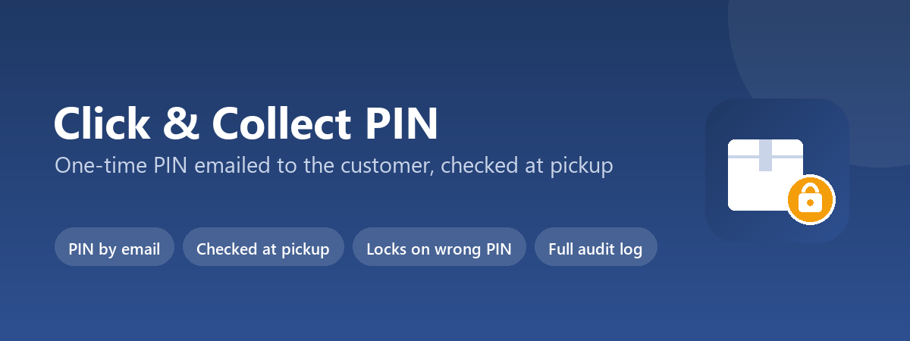

A one-time PIN, emailed to the customer and checked at the counter before a collection can be validated.
Mark a delivery method as Customer Collection. When the goods are ready, the customer receives a 6-digit PIN by email. Your staff enter that PIN when they validate the delivery, and every attempt is recorded.
📦 Collection methodsTick Customer Collection on any delivery method to switch the PIN on for its orders. |
📧 PIN when readyThe PIN is emailed once picking or packing is done, or at confirmation in a one-step warehouse. |
🔐 Checked at handoverValidating the delivery asks for the PIN, and it cannot be validated without it from any screen. |
🚫 Locks after wrong triesWrong entries are counted and the PIN locks at the limit you set; only an Inventory Administrator can then issue a new one. |
🔄 Send New PINSales users can send a fresh PIN when a customer lost the email, and the old one stops working. |
📝 Full audit logEvery PIN issued, verified, failed, locked, cleared or expired is logged with the user and the date. |
Odoo 18.0 • Community & Enterprise • depends on Sales, Inventory and Delivery • Licence LGPL-3
Odoo implementation and development. thecodelegion.com